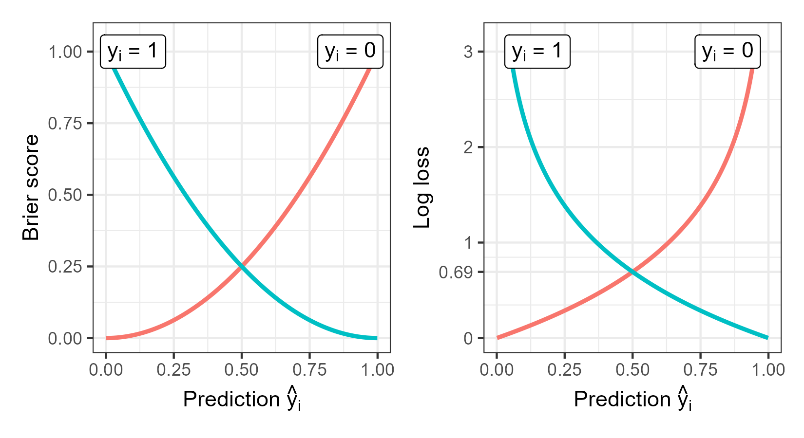
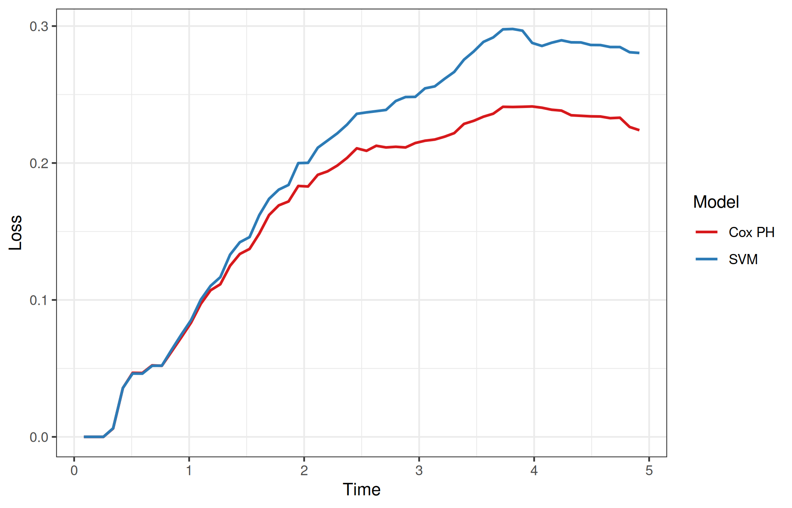

8 Scoring Rules
Scoring rules evaluate probabilistic predictions and measure the overall predictive ability of a model, capturing aspects of both calibration and discrimination (Gneiting and Raftery 2007; Murphy 1973). In contrast to calibration measures, which assess the average agreement between predicted and observed outcomes at a population level, scoring rules evaluate the sample mean of individual losses across all observations in a test set. Scoring rules are increasingly popular as probabilistic forecasts are widely recognized to be superior to deterministic predictions for capturing uncertainty in predictions (Dawid 1984; Dawid 1986). The formalization and development of scoring rules has primarily been due to Dawid (Dawid 1984; Dawid 1986; Dawid and Musio 2014) and Gneiting and Raftery (Gneiting and Raftery 2007), though the earliest measures promoting “rational” and “honest” decision making date back to the 1950s (Brier 1950; Good 1952). While few scoring rules have been proposed in survival analysis, there has been a notable increase in research into this area over the past few years. Before delving into these measures, this section begins by first describing scoring rules in the simpler classification setting.
Note that in the literature there is ambiguity around the definitions of scoring rule, loss, and score. Here, a scoring rule is a term for a function that takes as inputs a probabilistic prediction and an observed outcome and may have the properties: properness and strict properness (introduced below). In some literature, the terms loss and score are used to distinguish whether the scoring rule is optimized by minimization or maximization. To avoid confusion, each scoring rule below is described in terms of whether lower or higher values indicate better predictive performance.
Scoring rules are pointwise losses, meaning a loss is calculated for all observations and the sample mean is then calculated over all losses. Each scoring rule is therefore introduced for a single observation \(i\) only. To simplify notation, let \(\hat{S}_i\) be a shorthand for the survival function prediction for observation \(i\), usually written as \(\hat{S}(\cdot \mid \mathbf{x}_i)\); analogously for other distribution functions. As distribution functions can be derived from one another (Section 3.1.1), only one function is included in the signature for losses. As usual, \((t_i, \delta_i)\) is the observed survival outcome.
8.1 Classification losses
In the simplest terms, a scoring rule compares a probabilistic prediction to an observed outcome and assigns them a scalar value, the loss. Formally, a loss function is written as
\[ L: \mathcal{P}\times \mathcal{Y}\to \bar{\mathbb{R}}, \]
where \(p \in \mathcal{P}\) is a (predicted) probability distribution over the outcome space \(\mathcal{Y}\); for classification tasks, \(\mathcal{Y}\subseteq \mathbb{N}_0\), and for binary classification, \(\mathcal{Y}= \{0,1\}\).
As an example, take the Brier score for binary classification (Brier 1950) defined by: \[ L_{Brier}(\hat{p}_i, y_i) = (y_i - \hat{p}_i)^2, \tag{8.1}\]
where \(\hat{p}_i \equiv \hat{p}_i(y_i = 1)\) is the predicted probability of the positive class, or in survival terms the event of interest, and \(y_i \in \{0,1\}\) is the ground truth.
This loss is minimized when the predicted probability matches the observed outcome: \(\hat{p}_i(y_i = 1) = y_i\). If the event occurs then \(y_i = 1\) and the optimal prediction is \(\hat{p}_i(y_i = 1) = 1\); otherwise if the event does not occur then \(y_i = 0\) and the optimal prediction is \(\hat{p}_i(y_i = 1) = 0\).
This motivates an important property of scoring rules, properness. A loss is proper if it is minimized in expectation by the true prediction. In contrast, if \(L_{improper}(\hat{p}_i, y_i) = 1 - L_{Brier}(\hat{p}_i, y_i)\) were treated as a loss to be minimized, then it is an improper scoring rule as perfect predictions result in a loss value of \(1\) whereas the worst predictions result in a value of \(0\). Proper losses provide a method of model comparison as, by definition, predictions closest to the true distribution will result in lower expected losses.
Another important property is strict properness. A loss is strictly proper if the loss is uniquely minimized by the correct prediction. For example, the expected Brier score for a binary outcome is uniquely minimized when the predicted probability equals the true event probability (Figure 8.1). Strictly proper losses are particularly important for automated model optimization, as minimization of the loss will result in the “optimum score estimator based on the scoring rule” (Gneiting and Raftery 2007).
Formally, for any distributions \(p_Y, p \in \cal P\) and for any random variables \(Y \sim p_Y\), a classification loss \(L: \mathcal{P}\times \mathcal{Y}\rightarrow \bar{\mathbb{R}}\) is called:
- proper if \(\mathbb{E}_Y[L(p_Y, Y)] \leq \mathbb{E}_Y[L(p, Y)]\) for all \(p \in \mathcal{P}\);
- strictly proper if in addition to being proper, \(\mathbb{E}_Y[L(p_Y, Y)] = \mathbb{E}_Y[L(p, Y)]\) if and only if \(p = p_Y\).
In addition to the Brier score (8.1), another widely used strictly proper loss is the log loss (Good 1952), defined by
\[ L_{logloss}(\hat{p}_i, y_i) = -\log \hat{p}_i(y_i), \tag{8.2}\]
where again \(y_i \in \{0,1\}\) is the ground truth and \(\hat{p}_i\) is a predicted probability distribution. The log loss is minimized at \(0\) but is unbounded above.
These losses are visualized in Figure 8.1, which highlights the properness of both losses (Dawid and Musio 2014) as they approach their minima as predicted probabilities come closer to the true outcome. It can also be seen from the scale of the plots that the log loss penalizes wrong predictions more strongly than the Brier score, which may be beneficial or not depending on the given use case.

8.2 Survival losses
Analogously to classification losses, one can define a survival loss as
\[ L_S: \mathcal{P}\times \mathcal{T}\times \{0,1\}\rightarrow \bar{\mathbb{R}}, \]
where now \(\mathcal{P}\) denotes a set of probability distributions over \(\mathbb{R}_{>0}\) and \(\mathcal{T}\subseteq \mathbb{R}_{>0}\). This formulation assumes right-censoring only but analogous definitions can be formulated for event history analysis.
For any distributions \(p_Y, p\) in \(\mathcal{P}\) and for any random variables \(Y \sim p_Y\) and a censoring variable \(C\), with \(T := \min\{Y,C\}\) and \(\Delta := \mathbb{I}(Y \le C)\), then a survival loss \(L_S\) is called:
- proper if \(\mathbb{E}_{T, \Delta} [L_S(p_Y, T, \Delta)] \le \mathbb{E}_{T,\Delta}[L_S(p, T, \Delta)]\) for all \(p \in \mathcal{P}\);
- strictly proper if in addition to being proper, \(\mathbb{E}_{T, \Delta} [L_S(p_Y, T, \Delta)] = \mathbb{E}_{T,\Delta}[L_S(p, T, \Delta)]\) if and only if \(p = p_Y\).
With these definitions, the rest of this chapter lists common scoring rules in survival analysis and discusses some of their properties. As with other chapters, this list is not exhaustive but will cover commonly used losses. The losses are grouped into squared losses, absolute losses, and logarithmic losses, which respectively estimate the mean squared error, mean absolute error, and log loss in uncensored settings.
8.2.1 Squared losses
The integrated survival Brier score was introduced by Graf (Graf and Schumacher 1995; Graf et al. 1999) as an analogue to the integrated Brier score in regression. It is likely the most commonly used scoring rule in survival analysis, possibly due to its intuitive interpretation.
At a single time point, the survival Brier score (SBS) is given by,
\[ L_{SBS}(\tau, \hat{S}_i, t_i, \delta_i \mid \hat{G}) = \frac{\hat{S}_i^2(\tau) \mathbb{I}(t_i \leq \tau, \delta_i=1)}{\hat{G}(t_i)} + \frac{\hat{F}_i^2(\tau) \mathbb{I}(t_i > \tau)}{\hat{G}(\tau)}, \tag{8.3}\]
where \(\hat{S}_i^2(\tau) = (\hat{S}_i(\tau))^2\) and \(\hat{F}_i^2(\tau) = (1 - \hat{S}_i(\tau))^2\), and \(\hat{G}\) is the IPC weighting (Box 3).
At first glance this might seem intimidating but it is worth taking the time to understand the intuition behind the loss. Recall the classification Brier score (8.1), which provides a method to evaluate a probability mass function at a single point. In a regression setting, the integrated Brier score, also known as the continuous ranked probability score, is the integral of the Brier score for all real-valued thresholds (Gneiting and Raftery 2007) and hence allows predictions to be evaluated over multiple points as:
\[ L(\hat{F}_i, y_i) = \int (\mathbb{I}(y_i \leq \tau) - \hat{F}_i(\tau))^2 \,\mathrm{d}\tau, \tag{8.4}\]
where \(\hat{F}_i\) is the predicted cumulative distribution function and \(\tau\) is some meaningful threshold. As the left-hand indicator can only take one of two values, (8.4) can be represented as two distinct cases, now using \(t\) instead of \(y\) to represent time:
\[ L(\hat{F}_i, t_i) = \begin{cases} (1 - \hat{F}_i(\tau))^2 = \hat{S}_i^2(\tau), & \text{ if } t_i \leq \tau, \\ (0 - \hat{F}_i(\tau))^2 = \hat{F}_i^2(\tau), & \text{ if } t_i > \tau. \end{cases} \]
In the first case, the observation experienced the event before \(\tau\), hence the optimal prediction for \(\hat{F}_i(\tau)\) (the probability of experiencing the event before \(\tau\)) is \(1\), and therefore the optimal \(\hat{S}_i(\tau)\) is \(0\). Conversely, in the second case where the observation has not experienced the event, the optimal \(\hat{F}_i(\tau)\) is \(0\). The loss therefore meaningfully represents the ideal predictions in the two possible real-world scenarios.
To accommodate censoring, note that at \(\tau\) an observation will either have:
- not experienced any outcome: \(t_i > \tau\);
- experienced the event: \(t_i \leq \tau \wedge \delta_i = 1\); or
- been censored: \(t_i \leq \tau \wedge \delta_i = 0\).
Censored observations are discarded after the censoring time as evaluating predictions after this time is impossible as the ground truth is unknown. To compensate for removing observations, IPCW (Box 3) is again used to upweight predictions as \(\tau\) increases. IPC weights are defined such that observations are either weighted by \(\hat{G}^{-1}(\tau)\) when they have not yet experienced the event or by their final observed time, \(\hat{G}^{-1}(t_i)\), otherwise (Table 8.1).
| \(t_i > \tau\) | \(t_i \leq \tau\) | |
|---|---|---|
| \(\delta_i = 1\) | \(\hat{G}^{-1}(\tau)\) | \(\hat{G}^{-1}(t_i)\) |
| \(\delta_i = 0\) | \(\hat{G}^{-1}(\tau)\) | \(0\) |
Finally, to obtain a scalar summary of predictive ability over a time horizon, (8.3) can be integrated to give the integrated survival Brier score (ISBS),
\[ L_{ISBS}(\tau^*, \hat{S}_i, t_i, \delta_i \mid \hat{G}) = \int^{\tau^*}_0 \frac{\hat{S}_i^2(\tau) \mathbb{I}(t_i \leq \tau, \delta_i=1)}{\hat{G}(t_i)} + \frac{\hat{F}_i^2(\tau) \mathbb{I}(t_i > \tau)}{\hat{G}(\tau)} \,\mathrm{d}\tau, \tag{8.5}\]
where \(\tau^* \in \mathbb{R}_{>0}\) is an upper threshold to compute the loss up to. As with the cutoff in concordance measures, a common rule of thumb is to set \(\tau^*\) to be the time point at which 80% of the observations have experienced the event or censoring (Section 6.1.6).
When censoring is marginally independent, the ISBS consistently estimates the mean squared error (Gerds and Schumacher 2006). However, the SBS and ISBS are only proper under strict conditions: marginally independent censoring and no Type I censoring; under other conditions the losses are improper (Rindt et al. 2022; Sonabend et al. 2025). Despite this, the loss is deeply embedded in the survival literature and early research indicates that with a suitable choice of \(\tau^*\), even when censoring is only conditionally independent, the loss behaves approximately as a proper loss in practice (Sonabend et al. 2025).
There has been limited work in extending squared losses to handle other forms of censoring and truncation, though one notable extension is an adaptation of the ISBS for administrative censoring (Kvamme and Borgan 2023). There is some sparse research into extending the ISBS to handle interval censoring by estimating the probability of survival within the interval (Tsouprou 2015), however there appears to be little evidence of use in practice.
8.2.2 Logarithmic losses
The development of logarithmic losses follows from adapting the negative log-likelihood for censored datasets. Consider the usual negative log-likelihood in a regression setting, which is a standard measure for evaluating a model’s performance:
\[ L_{NLL}(\hat{f}_i, y_i) = -\log[\hat{f}_i(y_i)], \]
for a predicted density function \(\hat{f}_i\) and true outcome \(y_i\). Note this is analogous to the classification log loss in (8.2) with the probability mass function replaced with the density function.
Now recall (3.15) from Section 3.5.1, which gives the contribution from a single observation as:
\[ \mathcal{L}_i(\boldsymbol{\theta}) \propto \begin{dcases} f(t_i \mid \boldsymbol{\theta}), & \text{ if $i$ is uncensored }, \\ S(t_i \mid \boldsymbol{\theta}), & \text{ if $i$ is right-censored }, \\ F(t_i \mid \boldsymbol{\theta}), & \text{ if $i$ is left-censored }, \\ S(l_i \mid \boldsymbol{\theta}) - S(r_i \mid \boldsymbol{\theta}), & \text{ if $i$ is interval-censored }, \\ \end{dcases} \]
where \(r_i, l_i\) are the boundaries of the censoring interval and \(\boldsymbol{\theta}\) are model parameters (adaptations in the presence of left-truncation as described in Section 3.5.1 may also be applied).
The log loss can then be constructed depending on the type of censoring or truncation present in the data. For example, if only right-censoring is present then the right-censored log loss (RCLL) is defined as:
\[ L_{RCLL}(\hat{S}_i, t_i, \delta_i) = -\log\left(\delta_i\hat{f}_i(t_i) + (1-\delta_i)\hat{S}_i(t_i)\right), \tag{8.6}\]
where \(\hat{f}_i\) is derived from \(\hat{S}_i\) (Section 3.1.1).
If censoring is conditionally independent of the event (Section 3.3), then this scoring rule is strictly proper (Yanagisawa 2023). The loss is also interpretable as a measure of predictive performance when decomposed into two components:
- An observation censored at \(t_i\) has not experienced the event and hence the ideal prediction would be close to \(\hat{S}_i(t_i) = 1\); correspondingly (8.6) means the loss is minimized for censored observations at \(-\log(1) = 0\).
- If an observation experiences the event at \(t_i\), then the loss rewards assigning high density near \(t_i\). As \(\hat{f}_i(t_i)\) increases, the RCLL contribution decreases and tends to \(-\infty\).
While censored observations contribute non-negative losses only, for uncensored observations the loss is unbounded below in continuous time. This means uncensored observations can theoretically contribute more extreme loss values than censored ones. In practice, many survival models predict \(\hat{S}_i \in [0,1]\), from which \(\hat{f}_i\) is numerically derived (Section 3.1.1, Table 3.1). Under these approximations, density estimates more frequently lie in \([0,1]\), making strongly negative losses uncommon.
Other logarithmic losses have also been proposed, such as the integrated survival log loss (ISLL) in Graf et al. (1999). The ISLL is similar to the ISBS except \(\hat{S}_i^2\) and \(\hat{F}_i^2\) are replaced with \(-\log(\hat{S}_i)\) and \(-\log(\hat{F}_i)\) respectively. The ISLL does not appear to be widely used in the literature, though the all-cause log loss discussed in Section 8.5 uses a related formulation.
8.2.3 Absolute losses
The final class of losses considered here can be viewed as analogs of the mean absolute error in an uncensored setting. The integrated survival absolute score (ISAS), developed over time by Schemper and Henderson (2000) and Schmid et al. (2011), is similar to the ISBS but removes the squared term:
\[ L_{ISAS}(\tau^*, \hat{S}_i, t_i, \delta_i \mid \hat{G}) = \int^{\tau^*}_0 \frac{\hat{S}_i(\tau)\mathbb{I}(t_i \leq \tau, \delta_i = 1)}{\hat{G}(t_i)} + \frac{\hat{F}_i(\tau)\mathbb{I}(t_i > \tau)}{\hat{G}(\tau)} \,\mathrm{d}\tau \] where \(\hat{G}\) and \(\tau^*\) are as defined above. Analogously to the ISBS, the ISAS consistently estimates the mean absolute error when censoring is fully independent (Schmid et al. 2011). The ISAS and ISBS tend to yield similar results (Schmid et al. 2011), but in practice the ISAS does not appear to be widely used.
8.3 Prediction error curves
In addition to evaluating probabilistic outcomes with integrated scoring rules, non-integrated scoring rules can be used for evaluating distributions at a single point. For example, instead of evaluating a probabilistic prediction with the ISBS over \(\mathbb{R}_{>0}\), one could compute the survival Brier score at a single time point, \(\tau \in \mathbb{R}_{>0}\), only. Plotting these across a range of time points results in prediction error curves, which provide a simple visualization for how predictions vary over time. Prediction error curves are mostly used as a graphical guide when comparing a few models, rather than as a formal tool for model comparison. Example prediction error curves are provided in Figure 8.2 for the ISBS where the Cox PH increasingly outperforms the SVM.

mlr3proba.
8.4 Baselines and ERV
A common criticism of scoring rules is a lack of interpretability, for example, an ISBS of 0.5 or 0.0005 has no meaning by itself. Two methods can be used to help overcome this problem.
The first method is to make use of baselines for model comparison, which are models or reference values used to contextualize a loss and provide a common standard for judging models of the same class. In classification, it is possible to derive analytical baseline values, for example a Brier score is considered poor if it is above 0.25 or a log loss if it is above 0.693 (Figure 8.1). These are the values obtained when only predicting probabilities as \(0.5\), which is the best uninformed baseline in a binary classification problem (equivalent to a coin flip that uses no information from the available data). In survival analysis, simple analytical expressions are not possible as losses are dependent on the unknown distributions of both the survival and censoring time. For this reason it is advisable to include baseline models for comparison. Common baselines include the Kaplan-Meier estimator (Section 3.5.2.1) and Cox PH (Section 11.2.1). As a rule of thumb, a model has poor predictive ability if it performs worse than the Kaplan-Meier, whereas outperforming the Cox PH indicates added predictive value.
In addition to directly comparing losses from a candidate model to a baseline, one can also compute the percentage increase in performance between the candidate and baseline models, which produces a measure of explained residual variation (ERV) (Korn and Simon 1990; Korn and Simon 1991). For any survival loss \(L\), where lower values indicate better performance and the minimum is \(0\) (after scaling if required), the ERV is:
\[ \operatorname{ERV}_L(\hat{g}_C, \hat{g}_B) = 1 - \frac{L(\hat{g}_C)}{L(\hat{g}_B)} \]
where \(L(\hat{g}_C)\) and \(L(\hat{g}_B)\) are the losses computed with respect to predictions from the candidate and baseline models, respectively.
The ERV interpretation can make scoring rules easier to interpret and compare across experiments. For example, say a practitioner is considering a random forest model (Chapter 12) to analyze genomics data, with performance measured using the ISBS across three datasets. Suppose the candidate model achieves:
\[ L_1(\hat{g}_C) = 0.004; \quad L_2(\hat{g}_C) = 2.143; \quad L_3(\hat{g}_C) = 0.10. \]
At first glance, the model appears to perform substantially worse in dataset 2 than dataset 1. Now suppose a Kaplan-Meier estimator is used as a baseline and achieves:
\[ L_1(\hat{g}_B) = 0.006; \quad L_2(\hat{g}_B) = 10.9; \quad L_3(\hat{g}_B) = 0.14, \]
with corresponding ERV values:
\[ \operatorname{ERV}_{L_1}(\hat{g}_C, \hat{g}_B) = 0.33; \quad \operatorname{ERV}_{L_2}(\hat{g}_C, \hat{g}_B) = 0.80; \quad \operatorname{ERV}_{L_3}(\hat{g}_C, \hat{g}_B) = 0.29. \]
In all three datasets the random forest outperforms the baseline, with the largest relative improvement observed in dataset 2. This representation can also be used across future analyses and discussions, as relative improvements are often easier to interpret and compare than absolute differences in loss values, especially in the presence of censoring. For example, the \(33\%\) performance improvement in experiment 1 is substantially more interpretable than an absolute reduction in loss of \(0.002\), particularly because the former requires no knowledge of the underlying loss scale or censoring distribution.
8.5 Competing risks
Similarly to discrimination measures, scoring rules are primarily used with competing risks by evaluating cause-specific probabilities individually (Bender et al. 2021; Geloven et al. 2022; Lee et al. 2018).
For example, the non-integrated, cause-specific survival Brier score for event \(\tilde{q} \in \{1, \ldots, Q\}\) (Schoop et al. 2011) is given by:
\[ \begin{aligned} L_{SBS;\tilde{q}}(\tau, \{\hat{F}_{q;i}\}^Q_{q=1}, t_i, q_i \mid \hat{G}_{KM}) = {} & \frac{(1 - \hat{F}_{\tilde{q};i}(\tau))^2 \, \mathbb{I}(t_i \leq \tau, q_i = \tilde{q})}{\hat{G}_{KM}(t_i)} \\ & + \frac{\hat{F}_{\tilde{q};i}^2(\tau) \, \mathbb{I}(t_i \leq \tau, q_i \notin \{0, \tilde{q}\})}{\hat{G}_{KM}(t_i)} \\ & + \frac{\hat{F}_{\tilde{q};i}^2(\tau) \, \mathbb{I}(t_i > \tau)}{\hat{G}_{KM}(\tau)}, \end{aligned} \tag{8.7}\]
where \(\hat{F}_{\tilde{q};i}\) is the predicted cause-specific CIF for cause \(\tilde{q}\), \(\hat{G}_{KM}\) is a marginal Kaplan-Meier estimate of the censoring distribution, and \(q_i\) is the cause experienced by observation \(i\) (with \(q_i = 0\) denoting a censored observation). The three terms correspond to observations that, by time \(\tau\), have experienced the cause of interest \(\tilde{q}\), have experienced a competing event, or remain event-free, respectively; observations censored before \(\tau\) contribute zero. When there are no competing risks (\(Q = 1\)), \(1 - \hat{F}_{\tilde{q};i} = \hat{S}_i\) and (8.7) reduces to (8.3).
Bender et al. (2021), for example, evaluate competing-risks models using the integrated form of this score, integrating (8.7) for each cause up to the 25th, 50th, and 75th percentiles of the observed event times. Such cause-specific scores are currently implemented in survival software such as pec and riskRegression (Gerds and Ozenne 2019; Mogensen et al. 2012). This method results in one loss per cause, which can be useful to optimize a model for a single cause but may be less useful when trying to optimize over all causes.
Lee et al. (2018) instead use a single, all-cause, discrete-time loss similar to the RCLL:
\[ L_{DeepHit}(\hat{S}_i, \{\hat{F}_{q;i}\}^Q_{q=1}, t_i, \delta_i, q_i) = -\log[\delta_i\hat{p}_{q_i;i}(t_i) + (1-\delta_i)\hat{S}_i(t_i)], \tag{8.8}\]
where \(\hat{p}_{q_i;i}(t_i)\) is the predicted probability mass for the observed cause \(q_i\) at time \(t_i\), which can be derived from \(\hat{F}_{q_i;i}\), and \(\delta_i\) is \(0\) if observation \(i\) is right-censored or \(1\) if they experience any cause. This loss is the log-likelihood term of the DeepHit training objective, which additionally includes a ranking component to promote discrimination (Lee et al. 2018). Lee et al. (2018) use it to train their model rather than as an evaluation measure.
Recently, an all-cause logarithmic scoring rule, termed here the all-cause log loss, has been proposed, which also makes use of IPC weighting (Alberge et al. 2025):
\[ \begin{aligned} & L_{ACLL}(\tau^*, \hat{S}_i, \{\hat{F}_{q;i}\}^Q_{q=1}, t_i, q_i \mid \hat{G}) = \\ & \quad -\int^{\tau^*}_0 \left[\sum^Q_{q=1} \frac{\mathbb{I}(t_i \leq \tau, q_i = q)\log(\hat{F}_{q;i}(\tau))}{\hat{G}(t_i)} + \frac{\mathbb{I}(t_i > \tau)\log(\hat{S}_i(\tau))}{\hat{G}(\tau)}\right] \,\mathrm{d}\tau, \end{aligned} \tag{8.9}\]
where \(\hat{S}_i\) is the predicted all-cause survival function for observation \(i\) and \(\hat{F}_{q;i}\) is the predicted CIF for observation \(i\) and cause \(q\). Alberge et al. (2025) introduce the loss in the context of a boosting algorithm (Chapter 14), where the censoring survival function \(\hat{G}\) is estimated iteratively alongside the event model (Box 3).
Note that (8.9) introduces a minus sign to re-express the loss as a quantity to be minimized, to be more consistent with other losses in this chapter. Similarly, the integration over \([0, \tau^*]\) in (8.9) is a generalization to be consistent with the ISBS-type definition, but is not part of the original definition in Alberge et al. (2025).
Comparing this loss to the decomposition in Section 8.2.1, for each cause \(q\), observations either: experience the cause of interest, in which case their cause-specific CIF is evaluated; neither experience an event nor are censored by \(\tau\) and so the all-cause survival is evaluated; or experience a different cause and contribute zero to the term for cause \(q\).
One advantage of all-cause losses such as (8.8)-(8.9) is that they provide a single scalar quantity, which is convenient for (automated) model comparison, especially when there are many competing causes. However, this convenience comes at a cost as optimizing a single all-cause loss can obscure heterogeneity in performance across causes. This is especially problematic when accurate modeling of some causes is more important than others. Moreover, a model may achieve good overall performance while substantially underperforming for a clinically important cause. As a result, when performance for individual causes is a priority, cause-specific scoring rules such as (8.7) may be preferable. In such settings, automated procedures, such as those used for hyperparameter optimization (Chapter 2), would require multi-objective optimization methods (Morales-Hernández et al. 2023).